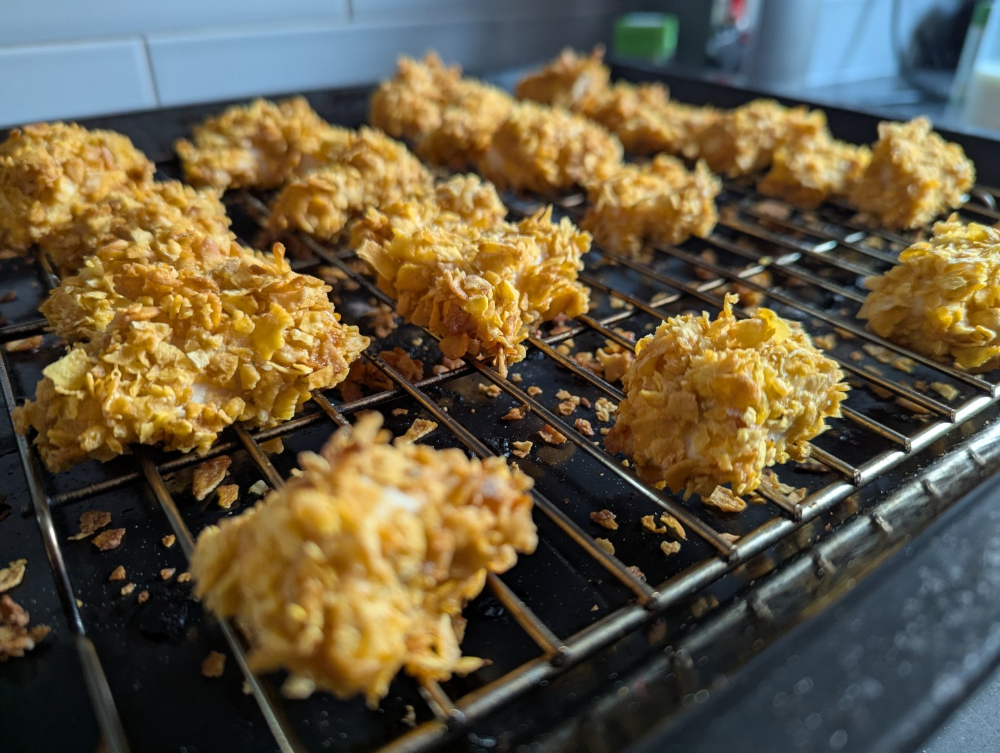

Crispy Gluten-Free Chicken Strips
These homemade crispy chicken strips are an easy gluten-free alternative. They're lovely and crunchy and perfect for making ahead.

Ingredients
- Chicken breast, cut into strips
- Plain gluten-free flour
- Eggs, beaten
- Gluten-free cornflakes, crushed
- Herbs and spices of your choice
- Salt and pepper
Method
- Preheat your oven to 200°C.
- Cut the chicken breasts into strips.
- Place the gluten-free flour in one bowl and the beaten eggs in another.
- Crush the gluten-free cornflakes and mix with your chosen herbs and spices.
- Coat each chicken strip in flour, dip it into the beaten egg and then cover with the cornflake mixture.
- Place the coated chicken strips on a lined baking tray.
- Bake for approximately 15–20 minutes, or until golden and cooked all the way through.
Freezer Tip
Allow the cooked chicken strips to cool, then freeze in portions. Defrost in the fridge and reheat until piping hot throughout.